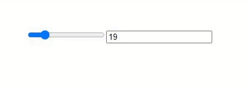
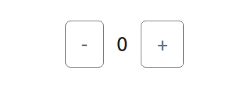

Yours Truly, Famous Inc.
 State and Lifecycle
State and Lifecycle
Пропсы можно только читать !!!
function Input(props) {
props.value = 'baz'
return <input value={props.value} />
}
function Form() {
return <Input value='foo' />
}
Конструктор — единственное место, где можно напрямую изменять state.
this.state = { count: 0 };
В остальных методах необходимо использовать this.setState().
this.setState({ count: state.count + 1 })
setState(updater, [callback]) добавляет в очередь изменения в состоянии компонента.
Т.е. думайте о setState() как о запросе на изменения, а не о команде немедленного обновления компонента.
this.setState((state, props) => {
return {counter: state.counter + props.step};
});
constructor() - инициализация компонента. Вызывается до того, как компонент будет примонтирован.
this.state = { counter: 0 };
this.handleClick = this.handleClick.bind(this);
При вызове он проверяет this.props и this.state и возвращает один из следующих вариантов:
Вызывается сразу после монтирования (то есть, вставки компонента в DOM)
Вызывается непосредственно перед размонтированием и удалением компонента.
В этом методе выполняется необходимый сброс: отмена таймеров, сетевых запросов и подписок, созданных в componentDidMount()
Вызывается сразу после обновления. Не вызывается при первом рендере.
Метод позволяет работать с DOM при обновлении компонента. Также он подходит для выполнения сетевых запросов, которые выполняются на основании результата сравнения текущих пропсов с предыдущими. Если пропсы не изменились, новый запрос может и не требоваться.
Этот метод существует для редких случаев, когда state зависит от изменений в props
null, чтобы ничего не обновлять.
shouldComponentUpdate(nextProps, nextState) {
return nextProps.id !== this.props.id
}
вызывается прямо перед этапом "фиксирования" (например, перед добавлением в DOM).
Он позволяет вашему компоненту брать некоторую информацию из DOM (например, положение прокрутки) перед её возможным изменением. Любое значение, возвращаемое этим методом жизненного цикла, будет передано как параметр componentDidUpdate()
События в React именуются в стиле camelCase вместо нижнего регистра.
С JSX вы передаёте функцию как обработчик события вместо строки.
<button onclick="activateLasers()">Кнопка в html</button>
<button onClick={activateLasers}>Кнопка в react</button>
function handleSubmit(e) {
e.preventDefault();
console.log('Отправлена форма.');
}
<button onClick={(e) => this.deleteRow(id, e)}>Удалить строку</button>
<button onClick={this.deleteRow.bind(this, id)}>Удалить строку</button>
SyntheticEvent - это кроссбраузерная обёртка над нативным экземпляром события. Эта обёртка помогает событиям работать одинаково во всех браузерах (т.е. содержали одинаковые свойства во всех браузерах).
handleClick = (e) => {
console.log(e.nativeEvent)
}
Обработчики вызываются на фазе всплытия (bubbling). А чтобы зарегистрировать событие на фазе перехвата (capture), просто добавьте Capture к имени события; например, вместо onClick используйте onClickCapture, чтобы обработать событие на фазе перехвата.
<button onClickCapture={this.handleClick}>Кнопка</button>
Сделать инпут range. (при перетаскивании ползунка в range мы записываем value из range в новый input) 
Сделать counter, который будет прибавлять/отнимать по кликам на кнопки 
Сжелать форму авторизации:
Вывести табличку со списком фильмов: